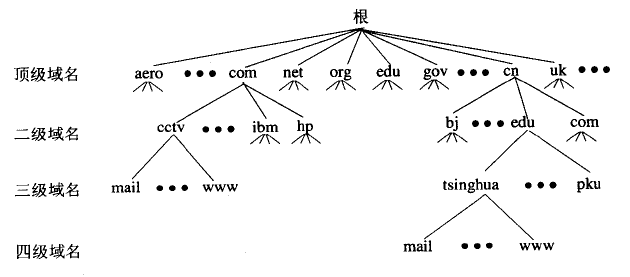
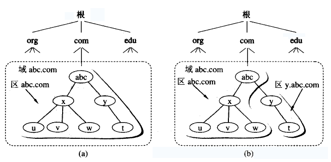
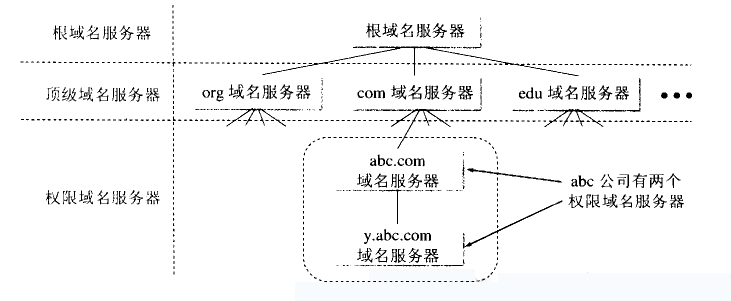

域名系统 DNS (Domain Name System) 是因特网使用的命名系统 , 用来把便于人们使用的机器名字转换成为IP地址 ; 域名系统其实就是名字系统 ; 为什么不叫 "名字" 而叫 "域名" 呢 ? 这是因为在这种因特网的命名系统中使用了许多的 "域 (domain)" , 因此就出现了 "域名" 这个名词 ; "域名系统" 明确地指明这种系统是应用在因特网中 ;
我们都知道 , IP 地址是由 32 位的二进制数字组成的 ; 用户与因特网上某台主机通信时 , 显然不愿意使用很难记忆的长达32位的二进制主机地址 ; 即使是点分十进制 IP 地址也并不太容易记忆 ; 相反 , 大家愿意使用比较容易记忆的主机名字 ; 但是 , 机器在处理 IP 数据报时 , 并不是使用域名而是使用 IP 地址 ; 这是因为 IP 地址长度固定 , 而域名的长度不固定 , 机器处理起来比较困难 ;
因为因特网规模很大 , 所以整个因特网只使用一个域名服务器是不可行的 ; 因此早在 1983 年因特网开始采用层次树状结构的命名方法 , 并使用分布式的域名系统 DNS , 并采用客户服务器方式 ; DNS 使大多数名字都在本地解析 (resolve) , 仅有少量解析需要在因特网上通信 , 因此 DNS 系统的效率很高 ; 由于 DNS 是分布式系统 , 即使单个计算机除了故障 , 也不会妨碍整个 DNS 系统的正常运行 ;
域名到 IP 地址的解析是由分布在因特网上的许多域名服务器程序共同完成的 ; 域名服务器程序在专设的结点上运行 , 而人们也常把运行域名服务器程序的机器称为域名服务器 ;
域名到 IP 地址的解析过程的要点如下 :
由于因特网的用户数量较多 , 所以因特网在命名时采用的是层次树状结构的命名方法 ; 任何一个连接在因特网上的主机或路由器 , 都有一个唯一的层次结构的名字 , 即 域名 (domain name) ; 这里 "域" (domain) 是名字空间中一个可被管理的划分 ; 从语法上讲 , 每一个域名都是有标号 (label) 序列组成 , 而各标号之间用点(小数点)隔开 ;
如下例子所示 :
这是中央电视台用于手法电子邮件的计算机的域名 , 它由三个标号组成 , 其中标号 com 是顶级域名 , 标号 cctv 是二级域名 , 标号 mail 是三级域名 ;
DNS 规定 , 域名中的标号都有英文和数字组成 , 每一个标号不超过 63 个字符 (为了记忆方便 , 一般不会超过 12 个字符) , 也不区分大小写字母 ; 标号中除连字符 - 外不能使用其他的标点符号 ; 级别最低的域名写在最左边 , 而级别最高的字符写在最右边 ; 由多个标号组成的完整域名总共不超过 255 个字符 ;
DNS 既不规定一个域名需要包含多少个下级域名 , 也不规定每一级域名代表什么意思 ; 各级域名由其上一级的域名管理机构管理 , 而最高的顶级域名则由 ICANN 进行管理 , 用这种方法可使每一个域名在整个互联网范围内是唯一的 , 并且也容易设计出一种查找域名的机制 ;
域名只是逻辑概念 , 并不代表计算机所在的物理地点 ; 据 2006 年 12 月统计 , 现在顶级域名 TLD (Top Level Domain) 已有 265 个 , 分为三大类 :
如下例子所示 :

如果采用上述的树状结构 , 每一个节点都采用一个域名服务器 , 这样会使得域名服务器的数量太多 , 使域名服务器系统的运行效率降低 , 所以在 DNS 中 , 采用划分区的方法来解决 ;
一个服务器所负责管辖 (或有权限) 的范围叫做 区 (zone) , 各单位根据具体情况来划分自己管辖范围的区 , 但在一个区中的所有节点必须是能够连通的 ; 每一个区设置相应的权限域名服务器 , 用来保存该区中的所有主机到域名 IP 地址的映射 ; 总之 DNS 服务器的管辖范围不是以 "域" 为单位 , 而是以 "区" 为单位 ; 区是 DNS 服务器实际管辖的范围 , 区 <= 域 ;
下图是区的不同划分方法的举例 ; 假定 abc 公司有下属部门 x 和 y , 部门 x 下面有分三个分布们 u , v , w , 而 y 下面还有下属部门 t ;
图 a 表示 abc 公司只设一个区 abc.com ;
这时 , 区 abc.com 和域 abc.com 指的是同一件事 ; 但图 b 表示 abc 公司划分为两个区 : abc.com 和 y.abc.com ; 这两个区都隶属于域 abc.com , 都各设置了相应的权限域名服务器 , 不难看出 , 区是域的子集 ;

下图是以上图 b 中 abc 公司划分的两个区为例 , 给出了 DNS 域名服务器树状结构图 ; 这种 DNS 域名服务器树状结构图可以更准确地反映出 DNS 的分布式结构 ; 图中的每一个域名服务器都能够部分域名到 IP 地址的解析 , 当某个 DNS 服务器不能进行域名到 IP 地址的转换时 , 它就会设法找因特网上别的域名服务器进行解析 ;
从下图可以看出 , 因特网上的 DNS 服务器也是按照层次安排的 , 每一个域名服务器只对域名体系中的一部分进行管辖 , 根据域名服务器所起的作用 , 可以把域名服务器划分为下面四种不同的类型 :

如下图所示 :
注意 :
A (Address) 记录是用来指定主机名（或域名）对应的 IP 地址记录 , 用户可以将该域名下的网站服务器指向到自己的 web server 上 , 同时也可以设置您域名的二级域名 ;
邮件路由记录 , 用户可以将该域名下的邮件服务器指向到自己的 mail server 上 , 然后即可自行操控所有的邮箱设置 ; 您只需在线填写您服务器的 IP 地址 , 即可将您域名下的邮件全部转到您自己设定相应的邮件服务器上 ;
别名记录 ; 这种记录允许您将多个名字映射到同一台计算机 ; 通常用于同时提供WWW和MAIL服务的计算机 ; 例如 , 有一台计算机名为 host.mydomain.com (A 记录) ; 它同时提供 WWW 和 MAIL 服务 , 为了便于用户访问服务 ; 可以为该计算机设置两个别名 (CNAME) : WWW 和 MAIL ; 这两个别名的全称就 http://www.mydomain.com/和 mail.mydomain.com ; 实际上他们都指向 host.mydomain.com ;
TTL 值全称是 生存时间 (Time To Live) , 简单的说它表示 DNS 记录在 DNS 服务器上缓存时间 ; 要理解 TTL 值 , 请先看下面的一个例子 :
假设 , 有这样一个域名 myhost.abc.com (其实 , 这就是一条 DNS 记录 , 通常表示在 abc.com 域中有一台名为 myhost 的主机) 对应 IP 地址为 1.1.1.1 , 它的 TTL 为 10 分钟 ; 这个域名或称这条记录存储在一台名为 dns.abc.com 的 DNS 服务器上 ;